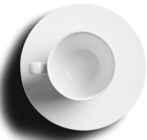
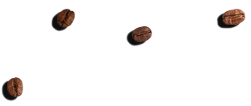
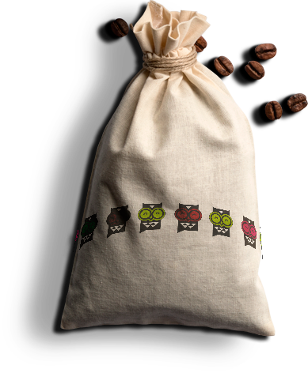
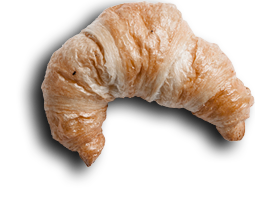
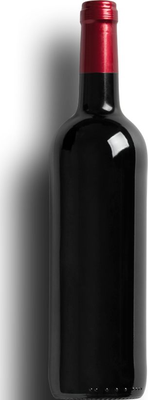

заказ столика
344 888
КАП
КЕЙК
БУДЬ СОВОЙ!
новый кофе-бар для старых друзей
ВАРИМ ЛУЧШИЙ КОФЕ
Мы делаем кофе по особому рецепту,
да и ещё с невероятной любовью
и преданностью к традициям кофеварения



ГОТОВИМ ВКУСНЯШКИ
Ты просто сойдешь сума от таких обалденных
и необычайно вкусных кексиков, булочек и печенек
приготовленных на нашей специальной кухне

СКОРО!
Очень скоро у нас откроется бар
на цокольном этаже!

КАФЕ И ПЕРСОНАЛ
Стильный и современный дизайн кафе и бара, а наш персонал
состоит только из отборных сортов, собственно как и наш кофе
ОТ СОЗДАТЕЛЕЙ
Артур
Наше кафе создано специально для тех кто любит
уют и пряный аромат жаренного кофе в кругу
любимых друзей
Антон
Мы решили объединить кафе и пекарню чтобы
доставлять удовольствие нашим посетителям
прямо «с пылу с жару»
Рязань, ул.Астраханская, д.23
344 888
Не забудьте подружиться с нами в соцсетях